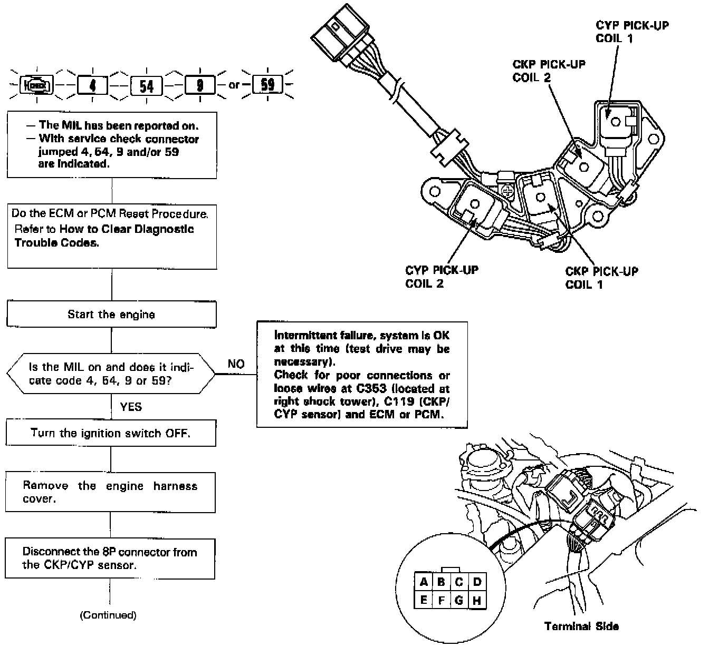
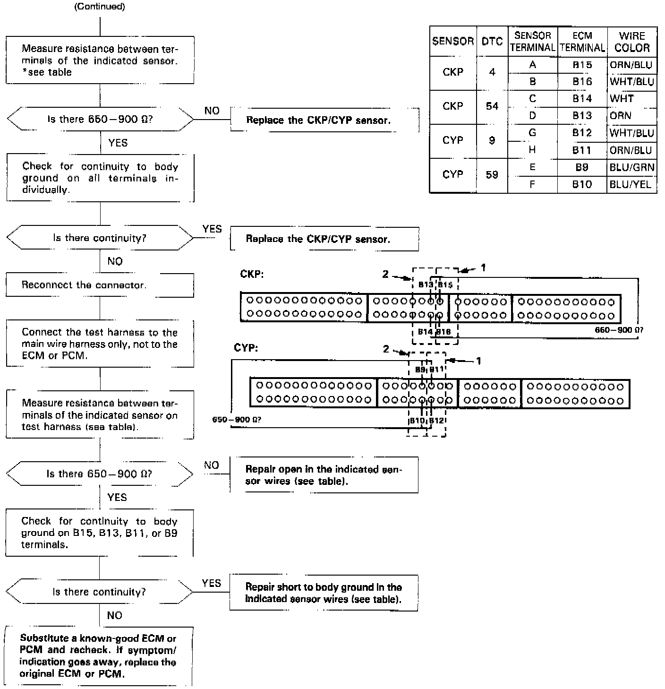

Crankshaft Position Sensor: Testing and Inspection


The Malfunction Indicator Lamp (MIL) indicates Diagnostic Trouble Code (DTC) 4: A problem in the Crankshaft Position (CKP) 1 Sensor circuit.
The Malfunction Indicator Lamp (MIL) indicates Diagnostic Trouble Code (DTC) 54: A problem in the Crankshaft Position (CKP) 2 Sensor circuit.
The Malfunction Indicator Lamp (MIL) indicates Diagnostic Trouble Code (DTC) 9: A problem in the Cylinder Position (CYP) 1 Sensor circuit.
The Malfunction Indicator Lamp (MIL) indicates Diagnostic Trouble Code (DTC) 59: A problem in the Cylinder Position (CYP) 2 Sensor circuit.